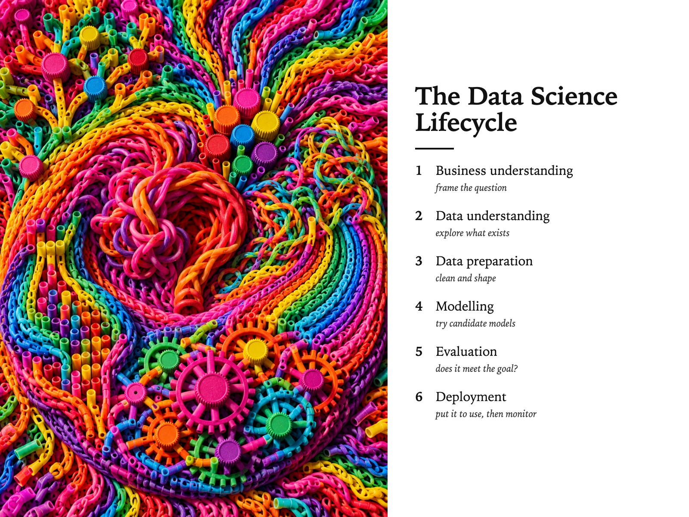

Style Vault / Creative / Loom Band Relief
Loom Band Relief
SV-063

Example: The data science lifecycle, set in Loom Band Relief
In plain words
A picture built from thousands of small, countable toy-like units - loom bands, bottle caps, straws - packed into a raised relief and lit from one low side so every piece casts a tiny shadow. It feels serious and rich even though the material is cheap. What makes it this style is that you can always count the units, and the light shows they are physical. Best for: many small contributions add up; data as building blocks; hands-on workshop materials; community and culture stories. Avoid: text or lettering generated inside the image.
Topics it fits
- Many small contributions add upcountable units forming one picture show that a big result is made of individual efforts
- Data as building blockseach visible unit stands in for a record, so the relief becomes a hands-on metaphor for a dataset
- Hands-on workshop materialsthe craft material invites people to build their own version, not just look at one
- Community and culture storiesa serious picture made from playful parts captures a team that takes the work, not itself, seriously
Art style and layout
- core locked [units_stay_countable, relief_is_physical, one_raking_light, zero_neutrals, no_focal_point]
- the tension the material is a toy and the picture is serious, and the frame only works while both are true. If it reads as craft-fair cute it has lost; if it reads as a tasteful abstract painting the material has been erased and it has also lost
- units stay countable THE CARD, and the first thing MJ will break. Its reflex is to blur thousands of small things into a texture. Say "each unit whole and individually visible" in every prompt. If you cannot count them at the edges, the frame is a miss
- relief is physical ask for
standing 2cm proud,every unit throws its own small hard shadow. Without the shadow clause MJ returns a flat printed pattern and the entire premise is gone - one raking light one low side light, never two, never frontal. The shadows must all run the same way - that consistency is what convinces the eye the surface is real
- zero neutrals no grey ground, no black outline, no white gap. Adjacent saturated hues only. This is the register she named on 2026-08-20 and the opposite end of the store from the muted-neutral-flat family
- palette [full spectrum at high saturation, e.g. "#E3341F "#F2A104 "#F5E03D "#2FA84F "#1E6FD9 "#7A2FBF "#E0479E laid adjacent; the only dark is cast shadow at roughly "#2A1B14]
- negative space none. The field is total and the crop is arbitrary
- era reference post-war fibre art and contemporary craft-material abstraction. Do not name a living artist - the source stays out of every prompt
What must stay, what may change
material - ten far-apart MODULAR UNITS, one locked relief language (elastic loom loops, rolled wool, cut drinking straws, plastic bread tags, snapped crayon stubs, bottle caps, twisted pipe cleaners, paper quilling coils, split clothes pegs, cable ties). The picture, the light and the density stay identical; only what the units ARE moves. This is the vault's FIRST material-axis sheet in 65 sheets - do not default it to subject
As JSON
Paste this into a prompt or a skill to reuse the style.
{
"id": "SV-063",
"name": "Loom Band Relief",
"audience": [
"creative"
],
"category": [
"fine-art",
"illustration"
],
"format": [
"illustration",
"poster"
],
"maker": "diffusion",
"keep_and_swap": "**material - ten far-apart MODULAR UNITS, one locked relief language** (elastic loom loops, rolled wool, cut drinking straws, plastic bread tags, snapped crayon stubs, bottle caps, twisted pipe cleaners, paper quilling coils, split clothes pegs, cable ties). The picture, the light and the density stay identical; only what the units ARE moves. This is the vault's FIRST material-axis sheet in 65 sheets - do not default it to subject",
"style_dna": {
"core_locked": "[units_stay_countable, relief_is_physical, one_raking_light, zero_neutrals, no_focal_point]",
"the_tension": "the material is a toy and the picture is serious, and the frame only works while both are true. If it reads as craft-fair cute it has lost; if it reads as a tasteful abstract painting the material has been erased and it has also lost",
"units_stay_countable": "THE CARD, and the first thing MJ will break. Its reflex is to blur thousands of small things into a texture. **Say \"each unit whole and individually visible\" in every prompt.** If you cannot count them at the edges, the frame is a miss",
"relief_is_physical": "ask for `standing 2cm proud`, `every unit throws its own small hard shadow`. Without the shadow clause MJ returns a flat printed pattern and the entire premise is gone",
"one_raking_light": "one low side light, never two, never frontal. The shadows must all run the same way - that consistency is what convinces the eye the surface is real",
"zero_neutrals": "no grey ground, no black outline, no white gap. Adjacent saturated hues only. This is the register she named on 2026-08-20 and the opposite end of the store from the muted-neutral-flat family",
"palette": "[full spectrum at high saturation, e.g. \"#E3341F \"#F2A104 \"#F5E03D \"#2FA84F \"#1E6FD9 \"#7A2FBF \"#E0479E laid adjacent; the only dark is cast shadow at roughly \"#2A1B14]",
"negative_space": "none. The field is total and the crop is arbitrary",
"era_reference": "post-war fibre art and contemporary craft-material abstraction. **Do not name a living artist** - the source stays out of every prompt"
},
"elements": {
"subject": "no subject in the ordinary sense - **the unit is the subject.** A field, not a thing. What the eye reads is a mass of identical small objects agreeing on a direction",
"composition": "edge to edge, no margin, no focal point, no centre. Movement comes only from the direction the rows turn. Crops arbitrarily at the frame, so it reads as a fragment of something bigger",
"light": "**hard raking sidelight, one direction, low angle.** This is the whole card. Flat light collapses the relief into a printed pattern and the card is gone",
"palette": "full saturated spectrum, adjacent hues touching so they vibrate. **No neutral, no grey, no black, no white.** The only dark in the picture is a cast shadow",
"material/texture": "matte, rubbery, slightly dusty. Every unit whole and countable - not melted, not blended, not abstracted into texture. **Relief is physical, never implied by shading**",
"mood": "euphoric and slightly obsessive. The labour is visible and that is part of what you are looking at",
"camera/render": "a physical object photographed dead flat-on, macro, no wall, no gallery, no hand, no scale cue"
},
"palette_hex": [
"#e3341f",
"#f2a104",
"#f5e03d",
"#2fa84f",
"#1e6fd9",
"#7a2fbf"
],
"topics": [
{
"topic": "Many small contributions add up",
"why": "countable units forming one picture show that a big result is made of individual efforts"
},
{
"topic": "Data as building blocks",
"why": "each visible unit stands in for a record, so the relief becomes a hands-on metaphor for a dataset"
},
{
"topic": "Hands-on workshop materials",
"why": "the craft material invites people to build their own version, not just look at one"
},
{
"topic": "Community and culture stories",
"why": "a serious picture made from playful parts captures a team that takes the work, not itself, seriously"
}
]
}